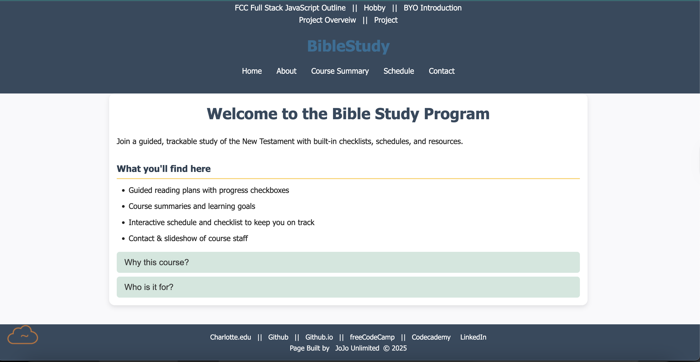

Johnson, Gabriel

Evaluation
- Good visual consistency across pages.
- Navigation works smoothly with well-structured links.
- Images are appropriately sized and load correctly.
- Typography is readable and balanced on desktop.
- Color palette is clean and enhances the site’s theme.
- Responsive layout adjusts well on smaller screens.
Website Checklist Review
- ✔ Doctype, metadata, and structure follow standards.
- ✔ Repeated elements are consistently styled.
- ✔ Good use of headings and hierarchical order.
- ✔ Images have alt text.
- ✔ CSS and JS are separated from HTML.
- ✔ Links are descriptive and accessible.
- ✔ No obvious validation errors.
- ✔ Content is original and clearly written.
Requirements Review
- Homepage includes purpose and branding → ✔ Met.
- Client project content present and complete → ✔ Met.
- Navigation for all required pages → ✔ Met.
- Proper directories (css/, js/, images/) → ✔ Met.
- Visual consistency and layout grid → ✔ Met.
- Interactive elements in progress → appears partially complete.
Constructive Suggestions
- Continue: Strong structure, clear visuals, good navigation.
- Start: Adding more personality through images or branding choices.
- Stop: Avoid small text on mobile — increase font size slightly.
- Add hover effects for buttons to improve UX.
- Consider adding subtle animations for transitions.